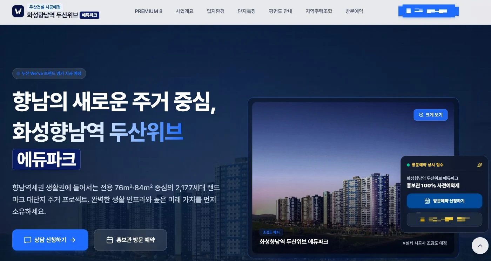
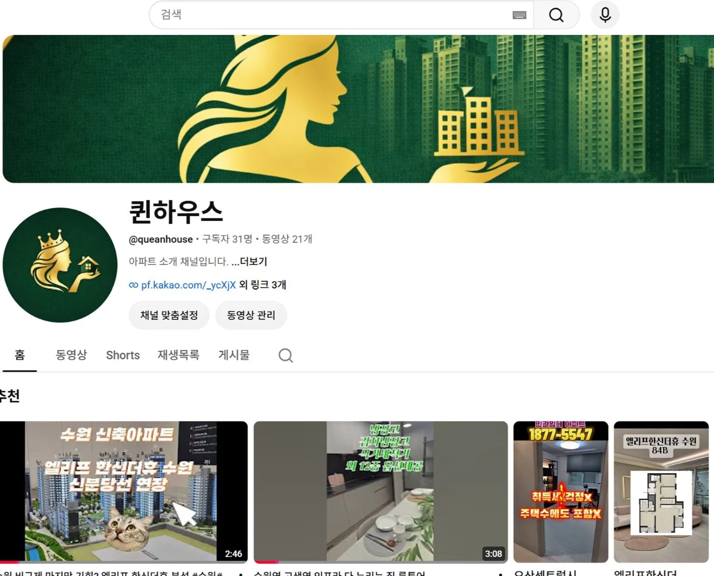
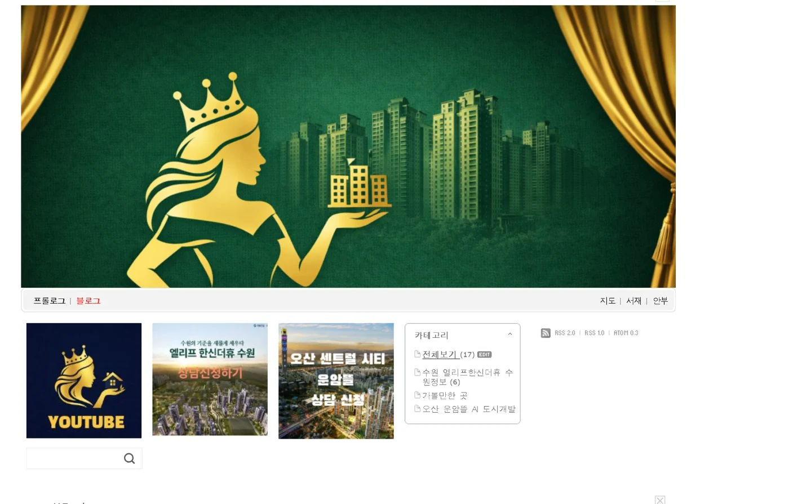
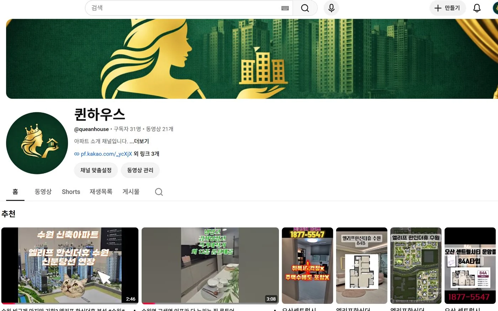
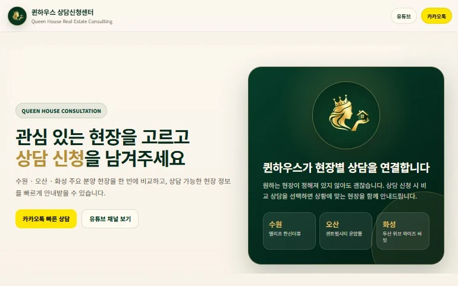
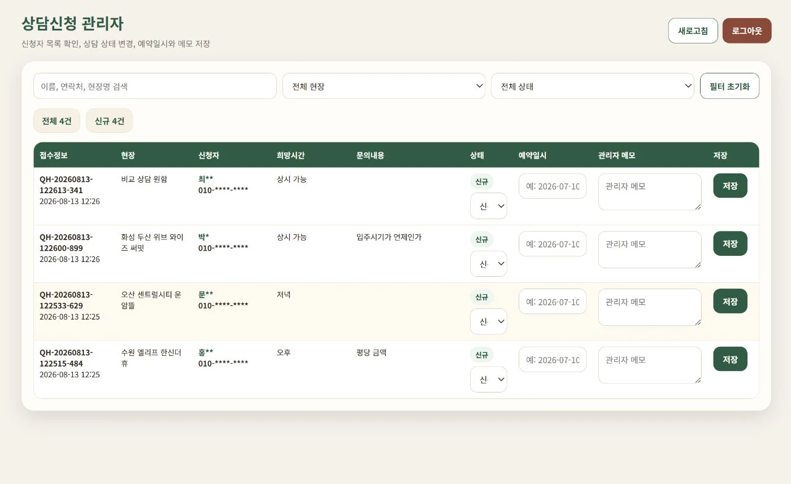
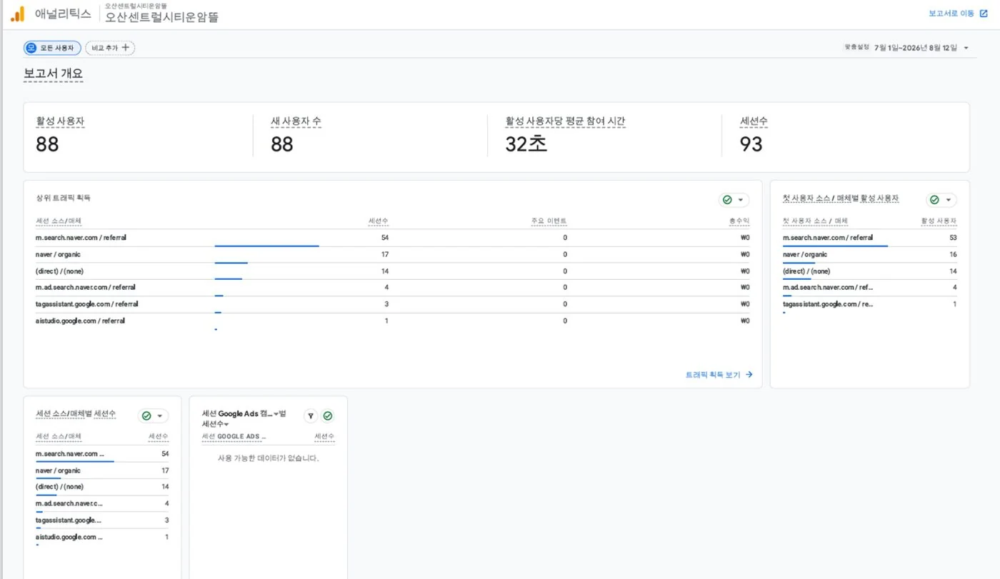
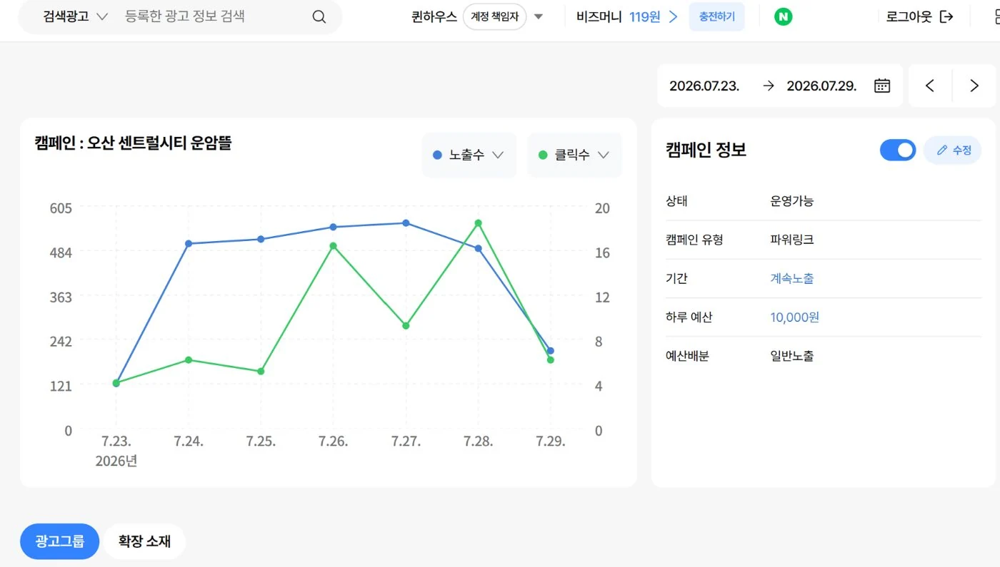
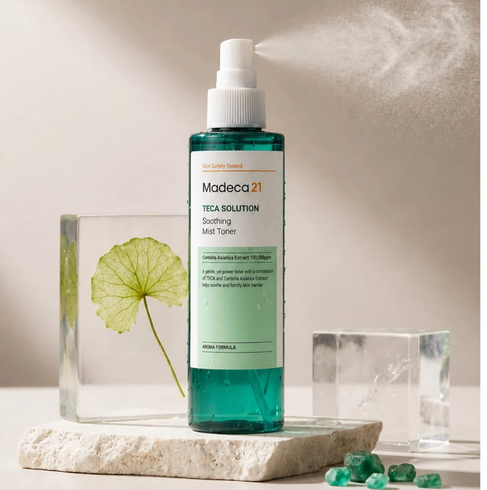
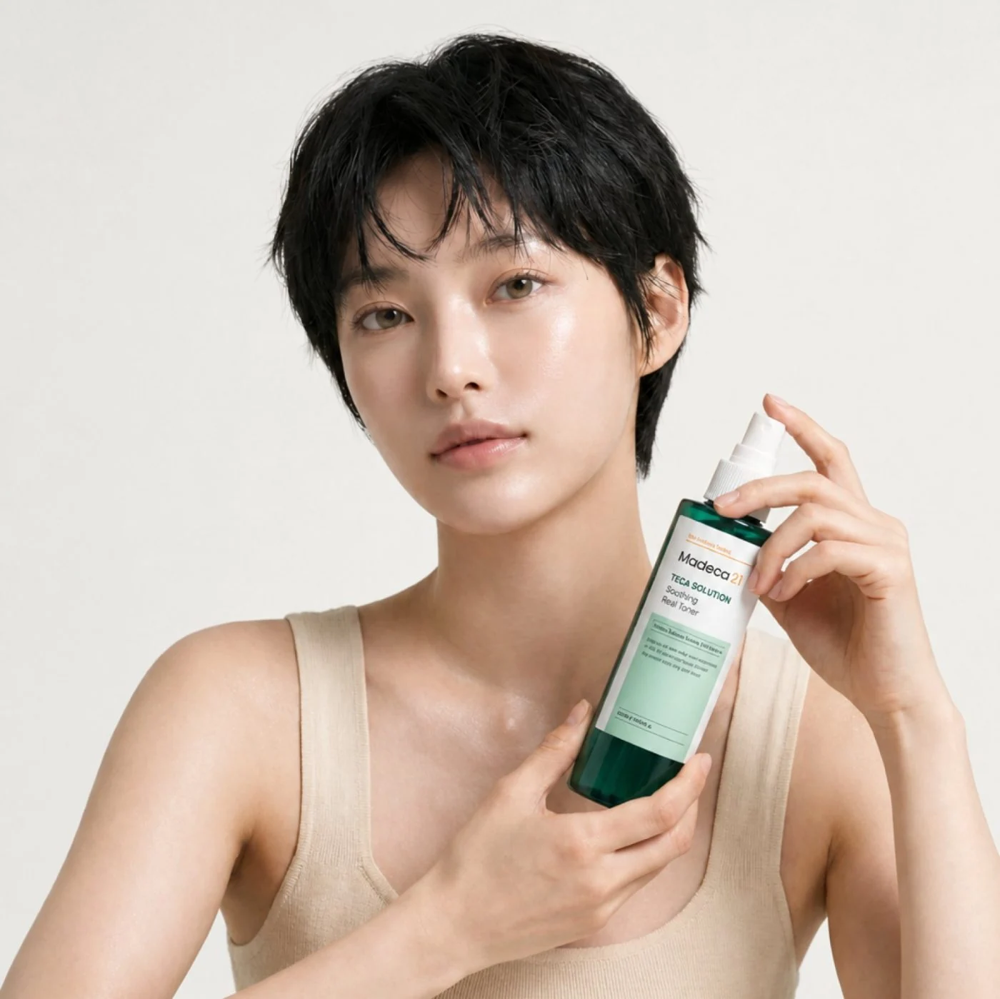

뷰티 · 부동산 · 공공기관 · 브랜드 IP까지 다섯 개 현장에서, 브랜드 메시지 해석부터 제품 · 모델 컷, 숏폼, 상세페이지, 그리고 AI 업무 자동화까지 제작하였습니다.
PROJECTS
브랜드 · 캠페인 · 웹
FIELDS
마케팅 · AI · 콘텐츠
CREATIVE
디자인 · 영상 · 비주얼 제작
SYSTEMS
웹 · 자동화 · 운영 구축
BEAUTY · JP MARKET ✦ CHARACTER IP ✦ PUBLIC SECTOR ✦ REAL ESTATE FUNNEL ✦ AI WORKFLOW ✦ BEAUTY · JP MARKET ✦ CHARACTER IP ✦ PUBLIC SECTOR ✦ REAL ESTATE FUNNEL ✦ AI WORKFLOW ✦
01 / WHAT I DO
네 가지 실행 축
Four axes of execution
01
브랜드 메시지 해석
MESSAGE INTERPRETATION
브랜드가 하려는 말과 타깃이 실제로 쓰는 말 사이의 거리를 좁힙니다. 가이드라인을 읽는 데서 끝내지 않고, 콘텐츠가 지켜야 할 원칙으로 다시 씁니다.
02
콘텐츠 기획 · 제작
PLANNING & PRODUCTION
기획서에서 멈추지 않습니다. 제품 이미지, 모델 · 라이프스타일 컷, 숏폼, 카드뉴스까지 직접 만들어 결과물로 증명합니다.
03
고객 행동 · 전환 흐름 설계
BEHAVIOUR & FUNNEL DESIGN
콘텐츠를 본 다음에 무엇을 하게 될지까지 생각합니다. 문의, 상담, 재방문으로 이어지는 접점을 콘텐츠와 함께 설계합니다.
04
AI 활용 업무 효율화
AI-ASSISTED EXECUTION
AI는 제 직무가 아니라 방법입니다. 기획 · 제작 · 운영의 반복 구간을 짧게 만들어 판단과 크리에이티브에 시간을 씁니다.
PROJECT아파트 분양 현장 마케팅 운영 · 퀸하우스 실무 프로젝트 ·담당 마케팅 업무 100% 단독 수행· 2026.02 ~
부동산 마케팅 운영 시스템 설계
콘텐츠 노출부터 문의 전환, 성과 확인까지 — 흩어진 고객 접점을 하나의 운영 흐름으로 연결했습니다. 개별 홍보물이 아니라, 채널과 도구를 잇는 구조를 만들고 직접 운영한 프로젝트입니다.
CONTENT
고객 접점
유튜브 · 분양 홈페이지 · 당근 고객이 정보를 처음 접하는 자리
→
INQUIRY
문의 전환
전화 · 채팅 · 상담 신청 관심이 행동으로 바뀌는 지점
→
PERFORMANCE
성과 확인
유입 · 광고 성과 · 반응 점검 다음 운영 판단의 근거
01
고객 접점
고객이 분양 정보를 처음 만나는 채널을 직접 기획 · 제작 · 운영했습니다. 채널마다 다음 행동(문의)으로 넘어갈 통로를 같은 기준으로 심어 두었습니다.

분양 홈페이지 — 첫 화면에 상담 신청 · 방문 예약 통로 배치 (화성향남역 두산위브)

유튜브 채널 — 현장 소개 영상 21편 기획 · 운영

블로그 · 배너 — 현장별 상담 신청 배너로 연결

유튜브 채널 — 현장 소개 영상 21편 기획 · 운영블로그 · 배너 — 현장별 상담 신청 배너로 연결
↓ 모든 채널의 다음 행동은 하나 — 문의
02
문의 전환
채널이 달라도 도착지는 같도록 만들었습니다. 전화 · 채팅 · 상담 신청 어느 쪽으로 들어와도 같은 정보가 모이고, 같은 기준으로 응대되도록 문의 구조를 설계했습니다.

상담 신청 접점 — 관심 현장 · 희망 시간대 · 문의 내용을 함께 수집

문의 관리 화면 — 접수된 상담을 상태 · 예약일시 · 메모로 관리하며 실제 상담으로 연결
↓ 문의가 쌓이면, 어떤 채널이 일했는지 확인
03
성과 확인
채널별 유입과 광고 성과를 확인해 다음 운영을 판단했습니다. 아래 화면은 제가 만든 도구가 아니라, 운영 결과를 점검하기 위해 사용한 플랫폼입니다.

Google Analytics → 웹사이트 유입 · 사용자 행동 데이터

네이버 광고주센터 → 광고 노출 · 클릭 · 비용 · 전환 등의 광고 성과 데이터
역할 구분 개인사업자 '퀸하우스랩'을 등록해 분양 마케팅을 직접 운영했습니다.
담당 (본인)홈페이지 기획·제작 · 유튜브 숏츠 제작 · 광고 집행 · 고객 유입 및 문의 연결
외부 수주광고 운영 의뢰 2건 수주 및 집행
영업 담당고객 상담 · 계약 체결
PERFORMANCE / REAL ESTATE MARKETING
2025
FROM TRAFFIC TO REAL CUSTOMER.
디지털 광고와 콘텐츠를 통해 고객 접점을 만들고, 총 41명의 문의 고객을 실제 상담 흐름으로 연결했습니다.
41
MARKETING LEADS
광고 · 콘텐츠를 통해 유입된 문의 고객
15
CONTRACTS CONNECTED
유입 고객 중 실제 계약으로 연결된 건수
36.6%
LEAD → CONTRACT
41명의 유입 고객 중 15건이 계약으로 이어진 비율
마케팅 채널을 통해 유입된 41명의 고객 중 15건이 실제 계약으로 연결되었습니다.
LEAD SOURCE / 41
36
DAANGN ADS
87.8%
주요 고객 획득 채널
04
NAVER POWERLINK → KAKAO
9.8%
파워링크 광고 유입 후 카카오톡 오픈채팅으로 문의
01
YOUTUBE CONTENT
2.4%
유튜브 콘텐츠를 통해 유입된 고객
전체 유입의 약 88%가 당근 광고에서 발생했으며, 네이버 파워링크와 유튜브 콘텐츠에서도 실제 고객 유입을 확인했습니다.
PROJECT SITES
수원 · 오산 · 화성
MULTI-CHANNEL
Web · Daangn · Naver · Kakao · YouTube
계약 체결은 상담 · 영업 담당자가 진행했으며, 위 수치는 마케팅 채널을 통해 유입된 고객을 기준으로 집계했습니다.
CASE 02 — BEAUTY · JAPAN
PROJECT일본 시장 뷰티 콘텐츠 제작 · 2인 팀 프로젝트 · 기획 공동 / 제작 100% · 2026.07.13 ~ 07.20
MADECA21 일본 시장 콘텐츠 제작
肌にも、ひと休みを — 피부에도 잠깐의 휴식을. Qoo10 · SNS 채널, 일본 15–24세 타깃. 테카솔루션(미스트)과 테카토닝(크림) 두 라인을 하나의 콘텐츠 시스템으로 묶었습니다. 일본 10~20대 소비자를 타깃으로 제품의 핵심 소구점을 도출하고, 이를 시각화한 광고 콘셉트를 기획했습니다. 생성형 AI로 비주얼 소재를 구현하고 영상 편집을 통해 최종 광고 콘텐츠를 완성했습니다.


AI-GENERATED제품 컷 · 키비주얼 · 모델 컷 모두 직접 생성형 AI로 제작했습니다. 촬영 없이 브랜드 톤에 맞춘 비주얼을 확보한 사례입니다.
문제 PROBLEM
일본 15–24세에게 더마 브랜드는 어렵고 멀다. 성분과 효능을 앞세운 설명은 스크롤 안에서 읽히지 않는 문제점이 있었습니다.
분석 ANALYSIS
팀원이 담당한 시장 · 경쟁 포지셔닝 분석을, 저는 콘텐츠가 지킬 4원칙(메시지 · 상황 · 모바일 · 표현)으로 번역했습니다.
전략 STRATEGY
어려운 더마에서 쉬운 데일리 케어로. 한 이미지에 하나의 메시지, 성분보다 사용하는 순간을 먼저 보여준다.
제작 PRODUCTION
제품 히어로샷 · 키비주얼 · 모델 컷을 모두 생성형 AI로 직접 제작했습니다. 두 라인을 잇는 AI 모델 페르소나를 세팅해 촬영 없이 시즌 · 라이프스타일 · 광고 소재까지 확장했습니다.
결과 · 검증 OUTCOME
공개 가능한 제품 · 모델 산출물을 기준으로 제작 완성도와 톤 일관성을 제시합니다.
인사이트 INSIGHT
언어가 바뀌는 시장에서는 카피보다 장면이 먼저 이해된다. '한 컷 한 메시지' 원칙이 다국어 채널에서 특히 강하게 작동했습니다.